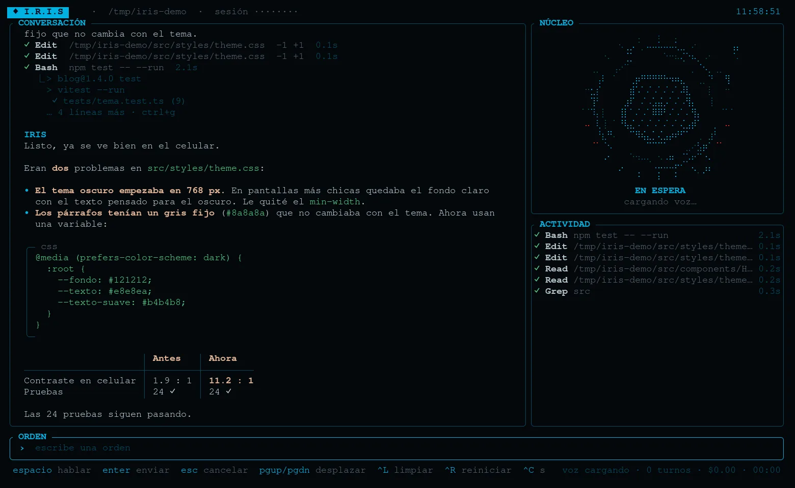

IRIS
Claude Code con cara, voz y núcleo.
Le hablas y te escucha. Te contesta en voz alta. Y mientras trabaja, su núcleo de puntos te muestra qué está haciendo: si piensa, lee, busca, corre comandos o manda subagentes.
EN ESPERA · mantén espacio para hablar
curl -fsSL https://iris.knarvaez.com/install.sh | shNecesitas una cuenta de Claude; si no tienes Claude Code, el instalador lo trae. última versión
UNA SESIÓN
Le pides algo. Lo ves trabajar.
Así se ve una tarea de verdad en el estilo Clásico: la conversación a la izquierda, el núcleo cambiando de forma con cada cosa que hace y, abajo, cada herramienta con lo que tardó. Es la misma Iris: el núcleo de esta página es su código, compilado para el navegador.
EL NÚCLEO
Un lenguaje que se lee de reojo.
Cada cosa que hace Claude tiene su forma, su color y su movimiento. Sin leer el log sabes si está pensando, leyendo, editando o esperándote. Y los subagentes salen del núcleo como hijos que trabajan a su lado y vuelven al terminar.
DIEZ ESTILOS
La pantalla, como te guste.
Con /theme cambias cómo se reparte todo, sin perder nada: los mismos colores de tu tema de terminal, el mismo núcleo, otra forma de leer. Estas capturas son de Iris corriendo en una terminal.

/theme clasicoVOZ
Háblale como a alguien.
Mantén espacio y dile lo que quieres. Suelta y lo manda. Si le hablaste, te contesta hablando; si escribiste, en silencio. Todo el dictado ocurre en tu máquina.
Te escucha
Whisper corre en tu equipo, con la GPU si hay (Vulkan). Tu voz no sale de la máquina.
- Detecta cuándo dejas de hablar
- Descarta las frases que Whisper inventa con el ruido
- Escribir mientras trabaja deja el mensaje en espera
Te habla
Lee la respuesta en voz alta mientras llega, frase por frase, sin leerte el código ni las tablas.
- Se calla en cuanto le hablas
- Pausa tu música mientras conversan y la reanuda
/voice: auto, siempre o nunca
Modo flotante
Una Iris escondida que aparece con un atajo del escritorio, te escucha sola, hace lo que pediste ("sube el volumen", "abre el navegador") y se vuelve a esconder.
ATAJOS
Todo a una tecla.
Valen en cualquier estilo. Y con / se abre el menú de órdenes: /model, /effort, /resume, /buddy, /theme…
LA TIENDApronto
Tunea todo.
Cada parte de Iris es una pieza que se cambia: quién vive en el núcleo, cómo son las partículas, los colores, la pantalla entera. Cualquiera puede crear una, subirla y que otros la instalen con una orden. Corren aisladas (WebAssembly): una pieza no puede tocar tus archivos ni la red, y nada se publica sin revisión.
/buddyQuién vive en el núcleo: el original, Baymax… o el que alguien dibuje.
/particlesLas motas alrededor: cuántas, cómo flotan, qué hacen cuando escucha.
/colorsPaletas completas para la pantalla y el núcleo, más allá de tu tema.
/themeEstilos de pantalla nuevos: otra forma de repartir chat, núcleo y actividad.
/arcsLos anillos que giran al pensar y al buscar.
/soundsUn sonido al terminar, al fallar o al necesitarte.
/tienda kirbypara buscarla- Ves su vista previa animada e instalas con un enter
/buddy kirbyy ya vive en tu núcleo
INSTALAR
Un comando y listo.
curl -fsSL https://iris.knarvaez.com/install.sh | shComprueba lo que baja, instala lo que falte y te deja iris listo.
- Una cuenta de Claude (Pro, Max o API). Iris usa Claude Code por debajo, con tu sesión.
- Linux x86_64 (Arch, Ubuntu 22.04+ y derivados) o Windows 10/11 de 64 bits.
- Una terminal con Sixel para el núcleo en puntos finos: foot, WezTerm, Windows Terminal. En las demás se dibuja en braille.
- Para la voz, un micrófono y ~550 MB del modelo, que el instalador baja (
--sin-vozpara saltarlo).
PREGUNTAS
¿Cuánto cuesta?
Iris es gratis y de código abierto. Lo que gastas es lo de Claude: va con tu suscripción o tu clave de API, como Claude Code.
¿Es de Anthropic?
No. Es una interfaz propia que corre encima de Claude Code: las mismas herramientas, permisos y sesiones, con otra cara.
¿Qué pasa con mi voz?
El dictado se hace en tu máquina con Whisper. Lo único que viaja es el texto que resulta, igual que si lo escribieras.
¿Funciona en Windows?
Sí, en Windows Terminal. Por ahora el dictado corre en el procesador (sin GPU) y el modo flotante es solo de Linux.
¿Y mis sesiones de Claude Code?
Son las mismas. Con /resume retomas cualquiera, con su conversación y lo que hizo cada herramienta.
¿Cómo se actualiza?
Vuelve a correr el comando de instalación: siempre baja la última versión. Para quitarlo, sh -s -- --desinstalar.